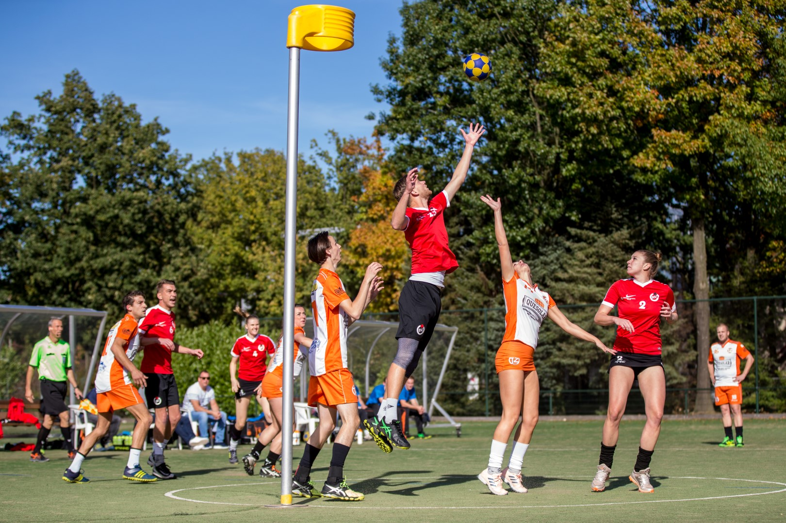
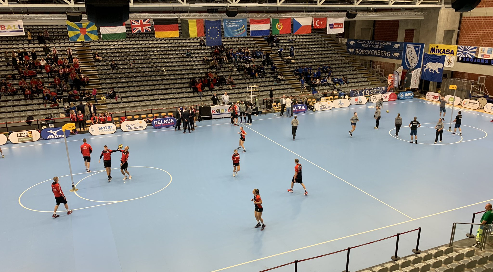
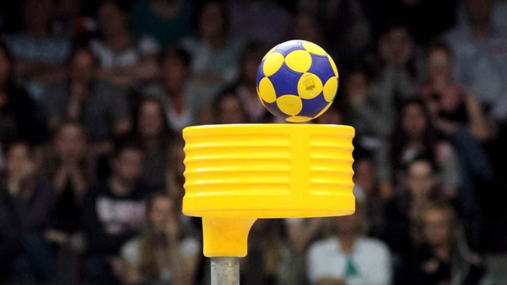
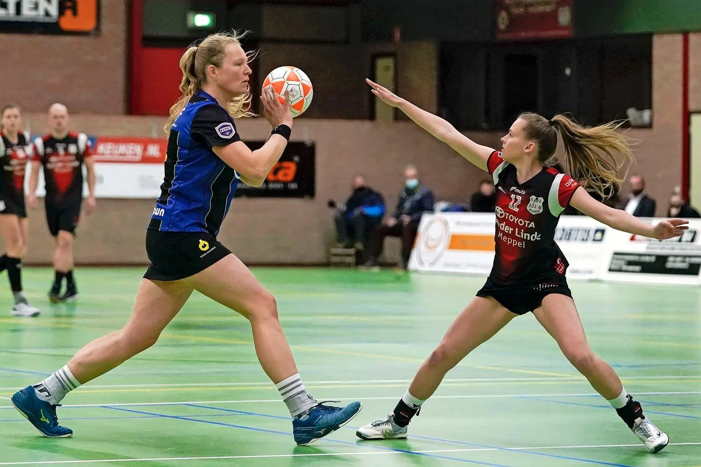
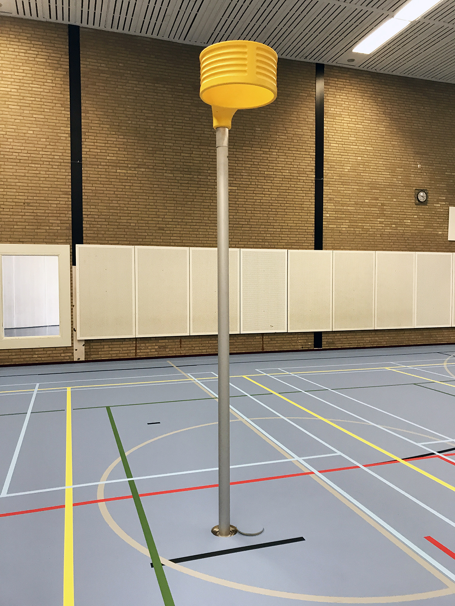

Basisspelregels
Korfbal is een balsport waarbij getracht wordt een bal zo vaak mogelijk door de korf van de tegenstander te werpen. Elk team heeft een korf die op een hoogte van 3,5 meter is opgehangen aan een paal. Bij de jongere jeugd gelden aangepaste hoogtes van de korf: 2,5/3,0 meter. Men dient de bal te gooien. Lopen met de bal is verboden. Het team dat het vaakst de bal door de korf heeft gegooid heeft gewonnen. Een geldig doelpunt wordt gemaakt door de bal van bovenaf door de korf van de tegenpartij te gooien.
Korfbal wordt in de winter en herfst in de zaal gespeeld (vroeger microkorfbal genoemd) en in de lente en zomer op het veld. In totaal zijn dat drie competities per jaar; twee op het veld en één in de zaal. Een team bestaat uit acht spelers: vier vrouwen en vier mannen. Twee vrouwen en twee mannen in het ene vak en twee mannen en twee vrouwen in het andere vak. De rest van de spelers is wissel, en zit op de bank. Als er bij de jeugd (breedtesport) niet genoeg jongens of meisjes zijn voor het spel, mag er met een hesje of een speciaal shirt een meisje voor een jongen spelen, of andersom. Tot 1991 werd korfbal in de veldvariant gespeeld met twaalf spelers, zes dames en zes heren. In die variant was er sprake van een middenvak (zie over vakken hieronder).
Het veld
Het korfbalveld - afmeting bij de senioren en junioren 40 × 20 meter (zowel zaal als veld) - is verdeeld in twee vakken (helften van het speelveld). Een van de vakken is het aanvalsvak, het andere is het verdedigingsvak. Een team plaatst twee dames en twee heren in het aanvalsvak, de andere twee dames en twee heren in het verdedigingsvak. Elke keer als er twee doelpunten (in totaal over beide teams) gescoord zijn, wordt er van vak gewisseld.
Bij de F-jeugd (van 6 t/m 8 jaar) en de E-jeugd (van 8 t/m 10 jaar) wordt eenvakskorfbal gespeeld, de E-jeugd doet dit pas sinds seizoen 2014-2015 wegens het invoeren van een nieuwe regel. Hiervoor mochten de clubs zelf kiezen, waardoor meestal de hogere teams tweevakskorfbal speelden en de lagere teams eenvakskorfbal. Bij eenvakskorfbal (ook wel mono-korfbal genoemd) moet je zowel aanvallen als verdedigen over het hele veld. Bij de jeugd D (van 10 t/m 12 jaar), C (van 12 t/m 14 jaar), B (14 t/m 16 jaar) en A (16 t/m 19 jaar) wordt in twee vakken gespeeld. Er wordt afhankelijk van de leeftijdscategorie en speelsterkte gewisseld van vak en functie. In leeftijdscategorie D na 12,5 minuut. In de D-hoofdklasse en leeftijdscategorieën C en verder wordt er van vak gewisseld nadat er twee doelpunten zijn gescoord. De spelers uit het verdedigingsvak gaan naar het aanvalsvak, en andersom.
Het middenvak is sinds 1991 afgeschaft. Eerst in 1990 in België en een jaar later in Nederland. Dit vak lag tussen het aanvalsvak en het verdedigingsvak. De enige functie was het overbrengen van de bal van het verdedigingsvak (waar de bal was onderschept) naar het aanvalsvak (waar gescoord moet worden). Omdat het middenvak nauwelijks een toegevoegde waarde had voor de sport (de bal werd er nauwelijks onderschept en bleef er vaak hooguit enkele seconden), werd het achterwege gelaten.
Op 14 december 2013 heeft de Bondsbestuur van het KNKV (Koninklijk Nederlands Korfbalverbond) aan de bondsraad bekendgemaakt de afmetingen van het speelveld voor veldkorfbal voor Senioren, Dames, A, B en C-jeugd aan te passen van 60 × 30 meter naar 40 × 20 meter. Door de kleinere afmetingen wordt het spel directer en aantrekkelijker. Het resultaat van deze aanpak moet uiteindelijk zijn dat meer kinderen en volwassenen veel plezier aan de korfbalsport beleven, waarbij elke speler zich maximaal kan ontwikkelen. Deze aanpassing is toegestaan met ingang van het seizoen 2014-2015. In de periode van 1 juli 2014 t/m 30 juni 2026 hebben alle korfbalverenigingen de tijd om hun huidige wedstrijdvelden (gras en kunstgras) aan te passen naar de vaste afmeting van 40 × 20 meter.
Scoren
Punten worden behaald wanneer de bal door de korf van de tegenpartij gaat. Deze moet volledig door de korf vallen. Wanneer de bal van onder door de korf gaat en daarna weer door de korf valt, telt dit niet als doelpunt, maar af en toe als de bal heel hoog boven de korf uitkomt wordt hier weleens een uitzondering in gemaakt. Mocht de bal van bovenaf in de korf vallen, maar door het effect dat erin zit de korf ook weer aan de bovenkant verlaten, dan telt dit eveneens niet als doelpunt.
Iedere keer dat de bal door de korf valt, telt dit als 1 punt. Een doelpunt kan worden gemaakt door een afstandsschot; in deze variant schiet de speler van relatief grote afstand (6 tot ruim 10 meter) de bal in de korf. Een variant is de doorloopbal; hierbij loopt de speler zijn directe tegenstander voorbij en krijgt de bal aangespeeld door een medespeler die zich meestal in de buurt van de korf heeft opgesteld en 'schiet' de bal onderhands in de loop. Verder bestaat er nog de korte kans waarbij er van korte afstand geschoten wordt, dit komt vooral veel voor bij vrije ballen.
Een bijzondere vorm van scoren is de strafworp. Als de verdediging van de ene partij de aanval van de andere partij een doelkans ontneemt door middel van een spelregelovertreding,wordt een strafworp toegekend. Ook wordt er een strafworp gegeven door de scheidsrechter wanneer een verdediger herhaaldelijk een overtreding maakt die het aanvalsspel belemmert. Eén speler van de aanvallende partij moet vanaf 2,5 meter voor de korf ongehinderd een doelpoging doen. Alle andere spelers moeten daarbij op minimaal 2,5 meter afstand van de paal en de schutter blijven. De strafworp moet per fout worden genomen door diegene wiens doelkans verloren gaat. Is dat niet het geval, dan degene tegen wie de overtreding wordt gemaakt.

Een andere manier om te scoren is de vrije worp. Een vrije worp wordt gegeven als er een zware of bewuste overtreding wordt gemaakt waarbij geen doelkans verloren gaat. Bij deze spelonderbreking moet de nemer achter de strafworpstip gaan staan en alle andere spelers 2,5 meter afstand nemen van de strafworpstip. Ook mogen de spelers van de aanvallende partij niet binnen een afstand van 2,5 meter van elkaar af staan. De speler die de bal uitneemt mag niet direct scoren, maar moet eerst naar een medespeler gooien.

Bij een lichte overtreding wordt er een spelhervatting toegekend door de scheidsrechter. Bij een spelhervatting wordt de bal toegekend aan de benadeelde partij op de plek waar de overtreding plaatsvond. Hij mag niet actief worden gehinderd door een tegenstander, mag niet rechtstreeks scoren en niet naar een medespeler gooien die binnen 2,5 meter van hem staat. Hij moet naar een medespeler gooien binnen vier seconden.
De spelregels betreffende de vrije worp en de spelhervatting zijn sinds 1 juli 2007 bij alle korfbalwedstrijden van toepassing en daarvoor alleen bij wedstrijden in de Korfbal League.
Verdedigen
Een aanval kan door de tegenpartij worden verdedigd. Indien de verdediger zich zo opstelt dat hij dichter bij de korf is dan de aanvaller, op een afstand waarbij hij het lichaam van de tegenspeler kan aanraken, wanneer hij de aanvaller aankijkt en daadwerkelijk tracht het schot te blokkeren (de arm uitsteken), is de aanvaller verdedigd, en mag deze niet op de korf schieten. Als hij toch schiet, geldt een eventueel doelpunt niet en mag de tegenstander de bal uit nemen. Bij het verdedigen geldt dat dames alleen dames mogen verdedigen en de heren ook alleen elkaar. Als een dame een doelpoging waagt, die verdedigd wordt door een heer, wordt er een strafworp gegeven. Omgekeerd is dat uiteraard ook het geval. Wél mag er onderling van tegenstander worden gewisseld, zolang deze van hetzelfde geslacht is.
Lopen
Een speler die in balbezit is, mag niet lopen met de bal. Het is voor de speler die in balbezit is wél toegestaan van voet te wisselen, mits deze op dezelfde plaats blijft staan. Zodra de bal is afgespeeld mag uiteraard weer worden gelopen. Dribbelen is ook niet toegestaan. Deze regel heeft tot gevolg dat veel van de acties (bijna per definitie) wel van de andere drie spelers in het (aanvals)vak moeten komen. Een speler, die zojuist de bal heeft afgespeeld, zal direct weer in actie komen om zich vrij te lopen en aanspeelbaar te zijn. Korfbal is daardoor van nature een beweeglijk en explosief spel.
De korf
Zoals hierboven al was vermeld, hangt bovenaan de paal een korf. Dit is een ronde mand zonder bodem met een diameter van 38 tot 42 centimeter. Van oudsher werd deze mand van riet of rotan gemaakt. Dit natuurlijke materiaal leverde echter nogal wat verschillen in korven op. Met name bij regelmatig gebruikte, vaak oudere manden hing de voorkant nog weleens duidelijk naar beneden. Hieraan is een einde gekomen met de komst van de kunststofkorf.
Sinds 1 januari 2004 worden alle internationale wedstrijden onder auspiciën van de Internationale Korfbal Federatie (IKF) gespeeld met goedgekeurde kunststofkorven en aluminium palen. In Nederland en België zijn deze kunststofkorven en aluminium palen verplicht materiaal. Per 1 juli 2008 speelt de gehele korfbalgemeenschap in de wereld (65 landen) reglementair haar wedstrijden met kunststofkorven. Het hoogste punt van de korf is 3,5 m boven de grond. Bij pupillen is dit 3 m.
